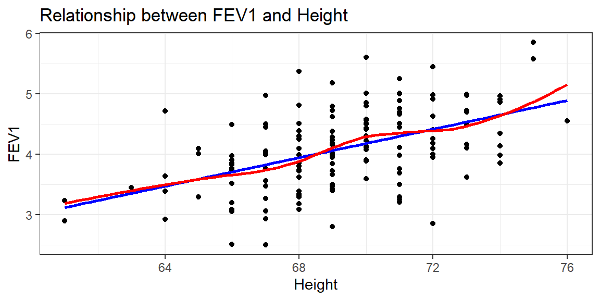

Multiple Linear Regression
2024-11-04
Motivation: Life is rarely bivariate.
- We know that the number of steps someone takes per day is not the only thing that is related to someone’s BMI.
- diet, age, sex, climate they live in, etc.
- So how can we understand whether or not physical activity is associated with BMI after controlling for these other measures?
- Consider two people of the same age, living in the same climate, with the same diet, but their level of physical activity is different.
- Then we can estimate how much physical activity affects someone’s BMI
Need to expand our model


There appears to be a tendency for taller men to have higher FEV1, but FEV1 also decreases with age.
We need to have a robust model that can incorporate information from multiple variables at the same time.
Framework
- Multiple linear regression (MLR) is our tool to expand our MODEL to better fit the DATA.
- Describes a linear relationship between a single continuous \(Y\) variable, and several \(X\) variables.
- Models \(Y\) from \(X_{1}, X_{2}, \ldots , X_{P}\).
- X’s can be continuous or discrete (categorical)
- X’s can be transformations of other X’s, e.g., \(log(x), x^{2}\).
Visualization
Now it’s no longer a 2D regression line, but a \(p\) dimensional regression plane.

A regression plane in 3 dimensions: \(FEV1 \sim Height + Age\)
Mathematical Model
The mathematical model for multiple linear regression equates the value of the continuous outcome \(y_{i}\) to a linear combination of multiple predictors \(x_{1} \ldots x_{p}\) each with their own slope coefficient \(\beta_{1} \ldots \beta_{p}\).
\[ y_{i} = \beta_{0} + \beta_{1}x_{1i} + \ldots + \beta_{p}x_{pi} + \epsilon_{i}\]
where \(i\) indexes the observations \(i = 1 \ldots n\), and \(j\) indexes the number of parameters \(j=1 \ldots p\).
Assumptions
The assumptions on the residuals \(\epsilon_{i}\) still hold:
- They have mean zero
- They are homoscedastic, that is all have the same finite variance: \(Var(\epsilon_{i})=\sigma^{2}<\infty\)
- Distinct error terms are uncorrelated: (Independent) \(\text{Cov}(\epsilon_{i},\epsilon_{j})=0,\forall i\neq j.\)
Parameter Estimation
Find the values of \(b_j\) that minimize the difference between the value of the dependent variable predicted by the model \(\hat{y}_{i}\) and the true value of the dependent variable \(y_{i}\).
\[ \hat{y_{i}} - y_{i} \quad \mbox{ where } \quad \hat{y}_{i} = \sum_{i=1}^{p}X_{ij}b_{j}\]
AKA: Minimize the sum of the squared residuals:
\[ \sum_{i=1}^{n} (y_{i} - \sum_{i=1}^{p}X_{ij}b_{j})^{2}\]
Fitting the model
Fitting a regression model in R with more than 1 predictor is done by adding each variable to the right hand side of the model notation connected with a +.
# A tibble: 3 × 5
term estimate std.error statistic p.value
<chr> <dbl> <dbl> <dbl> <dbl>
1 (Intercept) -2.76 1.14 -2.43 1.65e- 2
2 FAGE -0.0266 0.00637 -4.18 4.93e- 5
3 FHEIGHT 0.114 0.0158 7.25 2.25e-11 2.5 % 97.5 %
(Intercept) -5.00919751 -0.51229620
FAGE -0.03922545 -0.01405323
FHEIGHT 0.08319434 0.14559974Show the code
| Characteristic | Beta (95% CI) | p-value |
|---|---|---|
| (Intercept) | -2.8 (-5.0 to -0.51) | 0.016 |
| FAGE | -0.03 (-0.04 to -0.01) | <0.001 |
| FHEIGHT | 0.11 (0.08 to 0.15) | <0.001 |
| Adjusted R² | 0.325 | |
| No. Obs. | 150 | |
| Abbreviation: CI = Confidence Interval | ||
The corresponding regression equation now is
\[ \hat{y}_{i} = -2.76 - 0.027(age) + 0.114(height) \]
Interpreting Coefficients
Intercept
The intercept is interpreted as the predicted outcome when all covariates are set to 0.
\[ \hat{y}_{i} = -2.76 - 0.027(age) + 0.114(height) \]
A father who is 0 years old, and is 0 inches tall has an expected FEV of -2.76L
This number that does not make any sense whatsoever. This is often the case, and why regression output tables tend to not show the intercept.
Continuous Predictors
Slope
\(b_{j}\) is the estimated change in \(Y\) for a 1 unit increase in \(x_{j}\) while holding the value of all other variables constant. Can also be phrased as “after controlling for other predictors..”
\[ \hat{y}_{i} = -2.76 - 0.027(age) + 0.114(height) \]
- \(b_{1}:\) A father who is one year older is expected to have a FEV value 0.027 (0.014, 0.039) liters less than another man of the same height (\(p<.0001\)).
- \(b_{2}:\) Holding age constant, a father is expected to have 0.11 (.08, 0.15)L greater FEV for every inch taller he is compared to another father (\(p<.0001\)).
Binary Predictors
Reference level coding
- Binary predictors (categorical variables with only 2 levels) get converted to a numeric binary indicator variable which only has the values 0 and 1.
- Whichever level is assigned to be 0 is called the reference group or level.
“Slope” as a difference in groups
\(b_{j}\) is the effect of being in group (\(x_{j}=1\)) compared to being in the reference (\(x_{j}=0\)) group.
Model with sex as a predictor
Let’s look at how biological sex may impact or change the relationship between FEV and either height or age. The regression model now is:
\[ y_{i} = \beta_{0} + \beta_{1}x_{1i} + \beta_{2}x_{2i} +\beta_{3}x_{3i} + \epsilon_{i}\]
where
- \(x_{1}\): Age
- \(x_{2}\): height
- \(x_{3}\): 0 if Male, 1 if Female
❌ Do not manually change the variable to binary 0/1 numeric!
Base R
Call:
lm(formula = FEV1 ~ AGE + HEIGHT + BIOL.SEX, data = fev_long)
Residuals:
Min 1Q Median 3Q Max
-1.36151 -0.29656 -0.00458 0.30785 1.42583
Coefficients:
Estimate Std. Error t value Pr(>|t|)
(Intercept) -2.240511 0.751707 -2.981 0.00312 **
AGE -0.023539 0.004068 -5.786 1.83e-08 ***
HEIGHT 0.105089 0.010527 9.983 < 2e-16 ***
BIOL.SEXFemale -0.637746 0.078324 -8.142 1.09e-14 ***
---
Signif. codes: 0 '***' 0.001 '**' 0.01 '*' 0.05 '.' 0.1 ' ' 1
Residual standard error: 0.4776 on 296 degrees of freedom
Multiple R-squared: 0.6494, Adjusted R-squared: 0.6459
F-statistic: 182.8 on 3 and 296 DF, p-value: < 2.2e-16tbl_regression
Show the code
| Characteristic | Beta (95% CI) | p-value |
|---|---|---|
| (Intercept) | -2.2 (-3.7 to -0.76) | 0.003 |
| AGE | -0.02 (-0.03 to -0.02) | <0.001 |
| HEIGHT | 0.11 (0.08 to 0.13) | <0.001 |
| BIOL.SEX | ||
| Male | — | |
| Female | -0.64 (-0.79 to -0.48) | <0.001 |
| Adjusted R² | 0.646 | |
| No. Obs. | 300 | |
| Abbreviation: CI = Confidence Interval | ||
In this model BIOL.SEX is a categorical variable with levels Male and Female, where Male is the first ordered level. The estimate shown is for females compared to males.
Interpretations
The fitted regression equation for the model with gender is
\[ \hat{y} = -2.24 - 0.02*AGE + 0.11*HEIGHT - 0.64*I(BIOL.SEX==`Female`) \]
- \(b_{0}:\) For a male who is 0 years old and 0 cm tall, their FEV is -2.24L.
- \(b_{1}:\) Holding sex and height constant, for every additional year older an individual is, their FEV1 decreases by 0.02L.
- \(b_{2}:\) Holding age and sex constant, for every additional cm taller an individual is, their FEV1 increases by 0.16L.
- \(b_{3}:\) Controlling for height and age, females have 0.64L lower FEV compared to males.
Still can use template language
The interpretation of categorical variables still falls under the template language of “for every one unit increase in \(X_{p}\), \(Y\) changes by \(b_{p}\)”. So a 1 “unit” change is females (\(X_{3}=1\)) compared to males (\(X_{3}=0\)).
Categorical Predictors
Residental area
Let’s consider the effect of city environment on FEV. For those unfamiliar with the region, these cities represent very different environmental profiles.
| Characteristic | N = 300 |
|---|---|
| AREA, n (%) | |
| Burbank | 48 (16) |
| Lancaster | 98 (33) |
| Long Beach | 38 (13) |
| Glendora | 116 (39) |
I do not do anything to the variable AREA itself aside from add it into the model.
Base R
Call:
lm(formula = FEV1 ~ AGE + HEIGHT + BIOL.SEX + AREA, data = fev_long)
Residuals:
Min 1Q Median 3Q Max
-1.32809 -0.29573 0.00578 0.31588 1.37041
Coefficients:
Estimate Std. Error t value Pr(>|t|)
(Intercept) -2.250564 0.752414 -2.991 0.00302 **
AGE -0.022801 0.004151 -5.493 8.59e-08 ***
HEIGHT 0.103866 0.010555 9.841 < 2e-16 ***
BIOL.SEXFemale -0.642168 0.078400 -8.191 8.10e-15 ***
AREALancaster 0.031549 0.084980 0.371 0.71072
AREALong Beach 0.061963 0.104057 0.595 0.55199
AREAGlendora 0.121589 0.082097 1.481 0.13967
---
Signif. codes: 0 '***' 0.001 '**' 0.01 '*' 0.05 '.' 0.1 ' ' 1
Residual standard error: 0.4777 on 293 degrees of freedom
Multiple R-squared: 0.6529, Adjusted R-squared: 0.6458
F-statistic: 91.86 on 6 and 293 DF, p-value: < 2.2e-16tbl_regression
Show the code
| Characteristic | Beta (95% CI) | p-value |
|---|---|---|
| (Intercept) | -2.3 (-3.7 to -0.77) | 0.003 |
| AGE | -0.02 (-0.03 to -0.01) | <0.001 |
| HEIGHT | 0.10 (0.08 to 0.12) | <0.001 |
| BIOL.SEX | ||
| Male | — | |
| Female | -0.64 (-0.80 to -0.49) | <0.001 |
| AREA | ||
| Burbank | — | |
| Lancaster | 0.03 (-0.14 to 0.20) | 0.71 |
| Long Beach | 0.06 (-0.14 to 0.27) | 0.55 |
| Glendora | 0.12 (-0.04 to 0.28) | 0.14 |
| Adjusted R² | 0.646 | |
| No. Obs. | 300 | |
| Abbreviation: CI = Confidence Interval | ||
What’s going on?
- Binary indicators variables were automatically created where a 1 indicates if a person is from that area.
AREA AREALancaster AREALong Beach AREAGlendora
1 "Burbank" "0" "0" "0"
185 "Glendora" "0" "0" "1"
49 "Lancaster" "1" "0" "0"
150 "Long Beach" "0" "1" "0" - Someone from Burbank has 0’s for all of the three indicator variables
- Someone from Lancaster only has a 1 in the
AREALancastervariable and 0 otherwise. - Etc for each other area. This is called factor coding (aka “dummy coding”, reference coding, or one-hot encoding)
Process for reference coding.
- For a nominal variable \(X\), with \(K\) categories, define \(K\) indicator variables.
- Choose a referent category and leave it out
- Use remaining \(K-1\) in the regression.
- Often, the largest category is chosen as the reference category.
Do not have to manually do this
This is automatically done by the software for you in most programs
Mathematical model
\[ Y = \beta_{0} + \beta_{1}*x_{age} + \beta_{2}x_{ht} + \beta_{3}x_{sex} + \beta_{4}x_{4} + \beta_{5}x_{5} + \beta_{6}x_{6} \]
where
- \(x_{4}=1\) when
AREA='Lancaster', and 0 otherwise - \(x_{5}=1\) when
AREA='Long Beach', and 0 otherwise - \(x_{6}=1\) when
AREA='Glendora', and 0 otherwise
The coefficients for the other levels of the categorical variable are interpreted as the effect of that variable on the outcome in compared to the reference level.
Interpreting coefficients
Show the code
| Characteristic | Beta (95% CI) | p-value |
|---|---|---|
| (Intercept) | -2.3 (-3.7 to -0.77) | 0.003 |
| AGE | -0.02 (-0.03 to -0.01) | <0.001 |
| HEIGHT | 0.10 (0.08 to 0.12) | <0.001 |
| BIOL.SEX | ||
| Male | — | |
| Female | -0.64 (-0.80 to -0.49) | <0.001 |
| AREA | ||
| Burbank | — | |
| Lancaster | 0.03 (-0.14 to 0.20) | 0.71 |
| Long Beach | 0.06 (-0.14 to 0.27) | 0.55 |
| Glendora | 0.12 (-0.04 to 0.28) | 0.14 |
| Adjusted R² | 0.646 | |
| No. Obs. | 300 | |
| Abbreviation: CI = Confidence Interval | ||
- \(b_{0}\): For a male who lives in Burbank, is 0 years old and 0in tall has an expected FEV1 of -2.3L.
- \(b_{4}\) Controlling for age, height and biological sex, a person who lives in Lancaster has .03 (-.14, .20) higher lung function than a person living in Burbank.
- \(b_{5}\) Controlling for age, height and biological sex, a person who lives in Long Beach has .06 (-.14, .27) higher lung function than a person who lives in Burbank.
- \(b_{6}\) Holding other variables constant, a person who lives in Glendora has .12 (-.04, .28) higher lung function than a person who lives in Burbank.
None of these differences are significant, so we can conclude that after controlling for age, height and biological sex, residential area does not have an effect on the persons lung function. This can also be noticed by the lack of increase in the \(R^{2}\) value compared to the simpler model